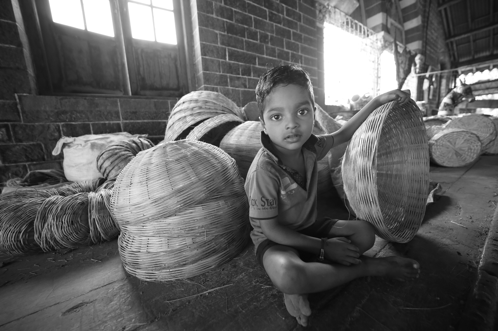

SOLEDAD
La pandemia de la soledad.
Conectados como nunca pero desde el mundo virtual.
30 Agosto 2026 | 8 min de lecturaQuerer ser un poco mas consciente
BLOG
Vivimos hiperconectados, pero cada vez más aislados. Un espacio para pensar los vínculos, las redes sociales y las condiciones que moldean nuestra vida.
Leer artículo Explorar temas
SOLEDAD
Conectados como nunca pero desde el mundo virtual.
30 Agosto 2026 | 8 min de lecturaALGORITMOS
Cuestiona el origen de tus ideas, de dónde vienen.
30 Agosto 2026 | 9 min de lecturaREDES SOCIALES
Reorganizan nuestro deseo.
30 Agosto 2026 | 8 min de lecturaMATERIALISMO

Economía mundial.
30 Agosto 2026 | 10 min de lecturaSuscríbete para saber de los últimos artículos.
Tu correo electrónico Suscribirme